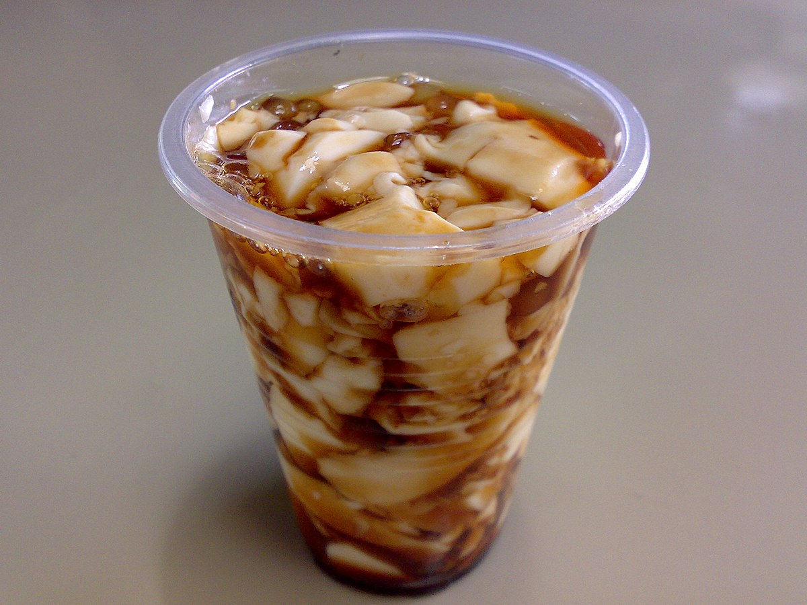

|  |
| Ingredients | 16 oz silken tofu 1/4 brown sugar 1 cups of water 1 cup of tapioca pearls |
|---|
| Guide How To make Taho |
| first put and Cook the Pearls in a hot boiling water, then mix the sugar,water vanila is optional in a medium high heat boil the ingriedients after that boil it so the sugar is dissolve simmer it in 2 or 4 minutes after this remove it from the heat, then put the Silken Tofu and steam it in 10 or 15 minutes after that you can place it on your cup to eat or serve it, Youre Are Now Done Cooking |